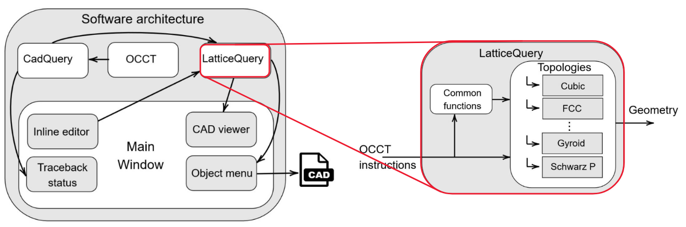

Introduction
Welcome to LatticeQuery - an open-source software designed for the modeling of lattice structures. This tool allows modeling of heterogeneous lattice structures, both beam-based and surface-based, and it is built upon the robust foundation of the CadQuery GUI editor. LatticeQuery supports Linux, Windows, and MacOS, making it accessible to a wide array of users.
You can download the latest version in the GitHub repository or directly from this link.
Features
Key features of LatticeQuery include:
- Beam-based and surface-based lattice structure modeling
- Compatibility with Linux, Windows, and MacOS
- Parametric modeling capabilities with OpenCASCADE and PyQT
- Flexible lattice topologies including Simple Cubic, BCC, FCC, and many more
- Conformal heterogeneous lattice examples
How It Works
After installing LatticeQuery, most of the functionality can be found within the 'parametric function library' (parfunlib) folder. Here, you can run the main Python script and begin creating your desired lattice structures. The topologies that are implemented range from Simple Cubic, BCC, and FCC to various TPMS such as Gyroid, Schwarz 'Primitive' (P), and Schwarz 'Diamond' (D).
With just a few lines of Python code, users can model a diverse array of lattice structures with varying thickness and properties. For more information on the usage, please visit the GitHub repository.
For a detailed description of the methodology and research behind LatticeQuery, check out the corresponding research paper.
Below is a brief introduction to the approach:
1. Lattice parametrization

Lattice can be defined in non-Cartesian coordinates, thus allowing modeling of conformal heterogeneous lattice structures.
2. Functionally varying geometric parameters
Thickness is not the only parameter that can be controlled. For example, cross-section can be a function:
3. Topology transition
Conventionally, different topologies transition from one to another unit cell to unit cell. It is, however, possible to have topologies transitioning in a transition plane:
Some topologies can have additional geometric parameters that define them. For example, the truncated cube topology can include the truncation parameter which can be varied.
Surface-based topology transition can also be achieved:
4. Software architecture
The covered geometric modeling concepts are implemented in the open-source software named LatticeQuery. It utilizes the Open CASCADE geometric modeling kernel and parametric modeling techniques from CadQuery.
Contact
For any further queries, feel free to reach out through our GitHub repository. We also welcome contributions and ideas to improve and extend the capabilities of LatticeQuery.